Practical 5: Linear Regression
Outcome Variable
Also known as: response, predicted, dependent variable
- Type: Continuous
- 1 variable
Influencing factor(s)
Also known as: covariate, independent, explanatory, predictor variable
- Type: Continuous or Categorical
- One (Univariable) or Multiple (Multivariable)
Practicum Scenario
In this practical, we use univariable linear regression to study the association between:
- Covariate: Smoking (
smk)- Levels: 1=Never, 2=Former, 3=Current
- Reference: Never smokers
- Outcome: Attachment loss (
cal_mean)- Unit: mm
Exercise 1: Univariable Analysis
Exercise 1.1 Dummy Variables
Build a univariable linear regression model to study the association between smoking (smk; 1=Never, 2=Former, 3=Current, set the never smokers as a reference group) and attachment loss (cal_mean; in mm).
Since the smoking variable has three levels, the first step is to create dummy variables.
1. Create a dummy variable for “Former” smokers:
-
Transform → Recode into Different Variables
-
Select
smk→ writeFormerunder Name & Label → press Change. -
Click .
-
Configure values:
- Under Old Value: enter
2→ Under New Value: enter1→ Press Add. - Under Old Value: enter
1→ Under New Value: enter0→ Press Add. - Under Old Value: enter
3→ Under New Value: enter0→ Press Add. - Under Old Value: select System- or user-missing → Under New Value: select System-missing → Press Add.
- Select All other values → select Copy old value(s) → Press Add. (Handles missing values)
- Under Old Value: enter
Note: Ensure Measure is Nominal in Variable View, Decimals is set to 0, and Change Values to 0 = “Current/none” and 1 = “Former”.
Exercise results
2. Repeat the same procedure to create a dummy variable for “Current” smokers. (Recode smk: 3 -> 1, 1 -> 0, 2 -> 0).
3. Fit the model
-
Analyze → Regression → Linear
-
Choose
cal_meanas Dependent Variable. -
Choose
FormerandCurrentunder Block 1 of 1 (Independent variables).
Formula
The linear regression model is defined as:
\[Y_i = \beta_0 + \beta_1 Former_i + \beta_2 Current_i + \epsilon_i\]
where \(\beta_0\) is the intercept term and represents the value corresponding to the reference group or never smokers.
Based on the output, and considering never smokers as the reference group, do individuals who are currently smoking have higher cal_mean measurement than former smokers?: ✅ Interpret the results
Exercise results
| Model | Meaning | Coefficient | p-value | Lower CI | Upper CI | Interpretation |
|---|---|---|---|---|---|---|
| (Constant) | mean CAL for never smokers | 0.942 | <0.001 | 0.913 | 0.971 | |
| Former | difference in mean CAL between former smokers and never smokers | 0.339 | <0.001 | 0.289 | 0.388 | So former smokers have, on average, 0.34 units higher CAL than never smokers |
| Current | difference in mean CAL between current smokers and never smokers | 0.519 | <0.001 | 0.464 | 0.573 | So current smokers have, on average, 0.52 units higher CAL than never smokers |
Summarizing: Compared with never smokers, former smokers have about 0.34 higher mean clinical attachment loss, and current smokers have about 0.52 higher mean clinical attachment loss.
Exercise 2: Linear Regression Assumptions
Basically, the results from a linear regression are valid if the assumptions of linear regression are met. These assumptions are:
- Linearity between the
outcomeand thecovariates - Independence of the observations
- Normality of the residuals
- Homoscedasticity: constant variance of the residuals
Note: For more details, check the lecture.
By design:
- We ensure that the observations are derived from independent participants.
- We ensure that the target variable of our model is normally distributed.
Exercise 2.1 Descriptive
Check whether cal_mean or ln_loss are normally distributed, graphically and statistically.
-
Analyze → Descriptive Statistics → Explore
-
Dependent list:
cal_meanandln_loss. -
Plots: Check Histogram and Normality plots with tests.
Exercise results: cal_mean
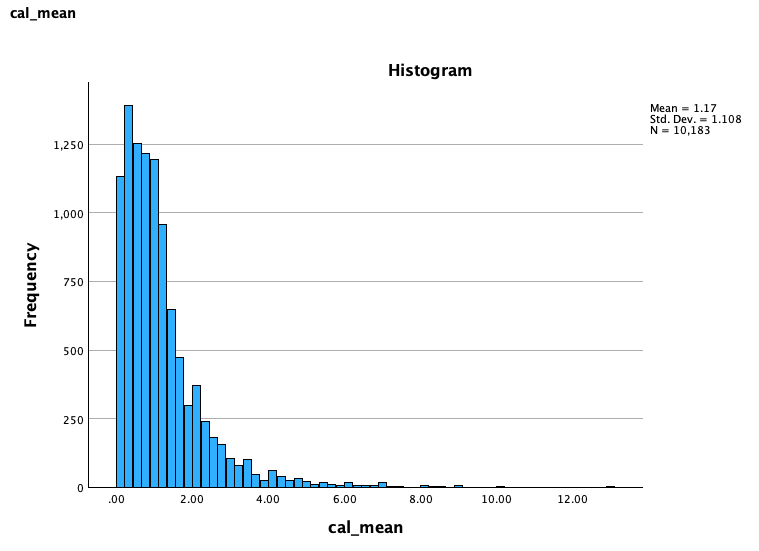
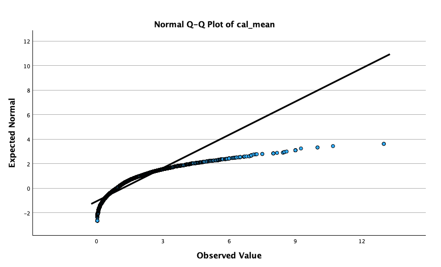
Exercise results: ln_loss
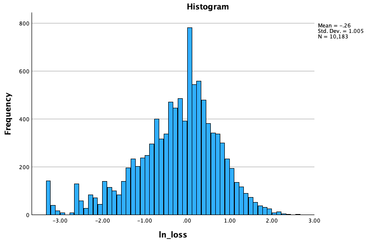
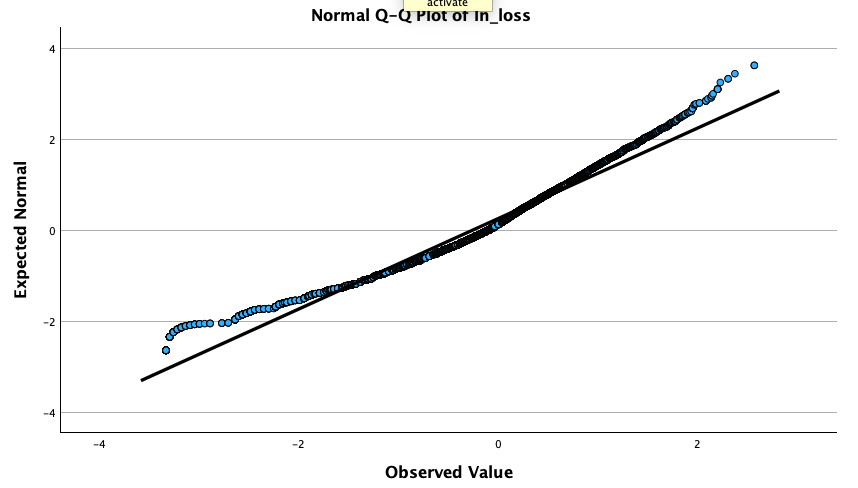
Exercise 2.2 Linearity assumption
Check graphically the linearity assumption between ln_loss and other continuous variables you want to consider adding to your model (potential confounders).
For that purpose, create a scatter plot:
-
Graphs → Chart Builder
-
Gallery → Scatter/Dot → Drag Scatter plot to preview.
-
Y-axis:
ln_loss. -
X-axis:
alcg(independent).
Add regression line:
Double click graph → → Select Linear.
Create another graph for height and weight. Compare the two. Which one shows a linear relationship?
Exercise results
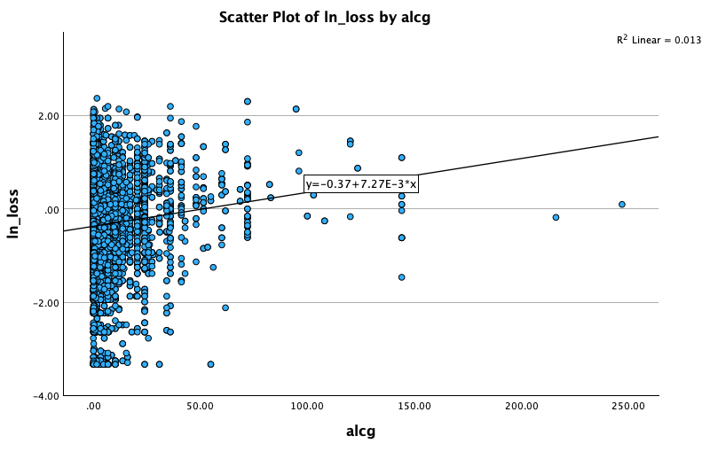
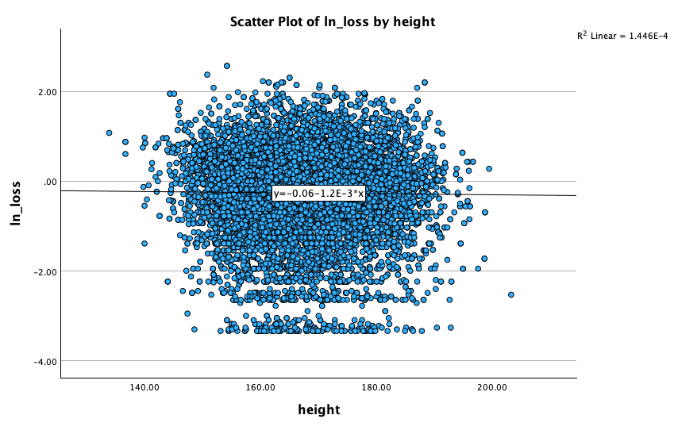
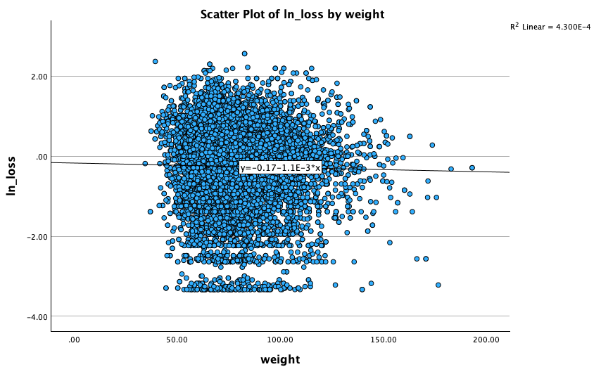
Exercise 2.3 Polynomials
One way to deal with non-linearity is to introduce a quadratic expression. For the relationship between ln_loss and alcg, add a quadratic term.
Then, create quadratic term: Create new variable alcg2 = alcg * alcg.
-
Transform → Compute Variables
-
Target Variable:
alcg2. Numeric Expression:alcg * alcg.
Exercise 2.4 Homoscedasticity assumption
Homoscedasticity means that the independent variable do not affect the residuals.
Check the homoscedasticity assumption graphically and statistically.
Graphically:
-
Analyze → Regression → Linear
-
In the Linear Regression window, choose
ln_lossas Dependent andalcgas Independent(s). -
Click and select Estimates, Confidence Intervals, Model fit, R squared change, Part and partial correlations, Collinearity diagnostics, Casewise diagnostics.
-
Click and select Histogram and Normal probability plot. In Scatter 1 of 1, set
*ZRESIDas Y and*ZPREDas X.
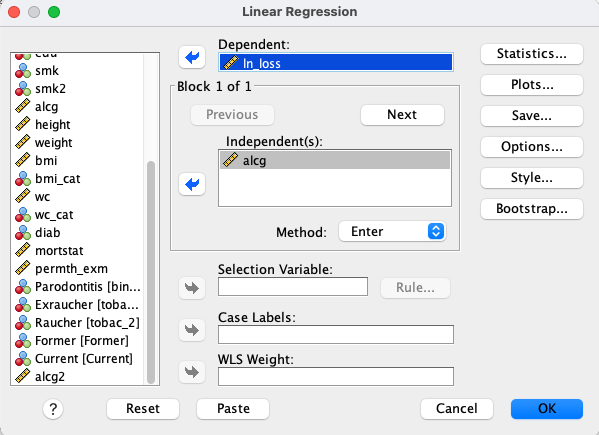
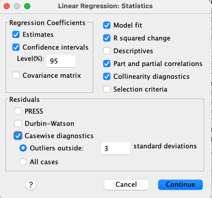
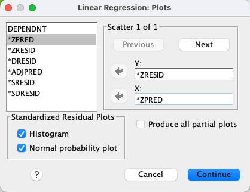
From the output, report the correlation Coefficient, are the two variables correlated?
Statistically (Breusch-Pagan test):
-
Analyze → General Linear Model → Univariate
-
In the Univariate window, select
ln_lossas Dependent Variable andalcgas Covariate(s). -
Click and select Modified Breusch-Pagan test and Parameter estimates with robust standard errors.
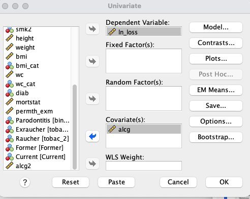
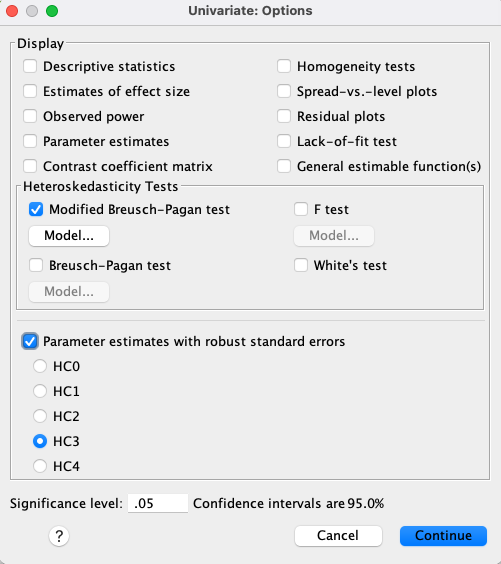
Exercise results
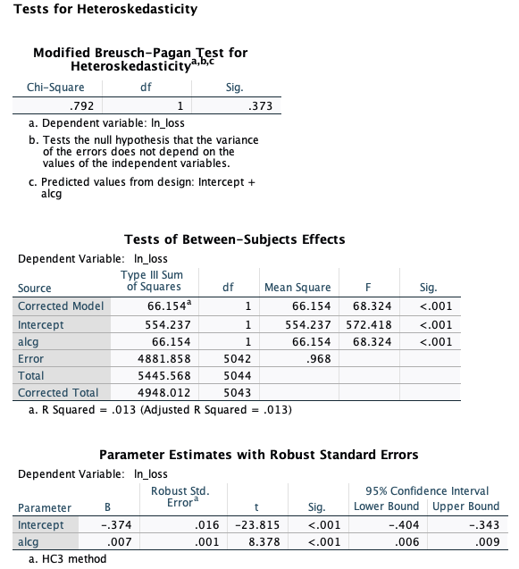
Interpretation:
- The null hypothesis (H₀): constant variance of residuals (homoscedasticity).
- p = 0.373 → not significant.
Conclusion:
DO NOT reject the null → No evidence of heteroskedasticity. Residual variance appears constant. Homoscedasticity assumption is met.
Exercise 3: Effect Modification
We hypothesize that the impact of alcohol on attachment loss differs by gender.
Exercise 3.1 Create an interaction term
Introduce an interaction term between gender (sex) and alcohol consumption (alcg).
1. Create a dummy variable for male using the ‘sex’ variable:
Transform → Recode into Different Variables
Assign the value 1 to the variable male and the value 0 to the variable female.
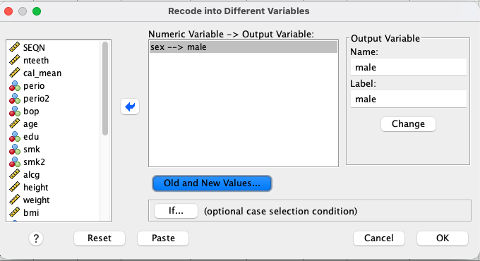
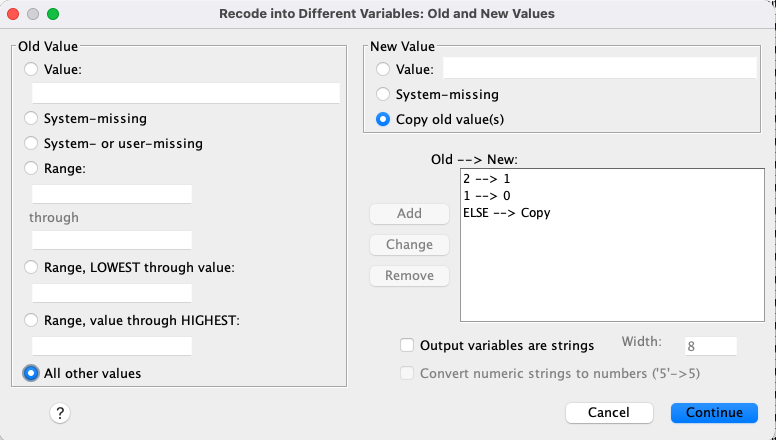
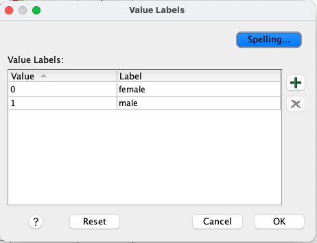
2. Create interaction variable (AlcMale):
💡 Remember in SPSS:
Transform → Compute variable
In the Compute Variable window, in the Target Variable field, type AlcMale.
In the Numeric Expression field, type alcg * male.
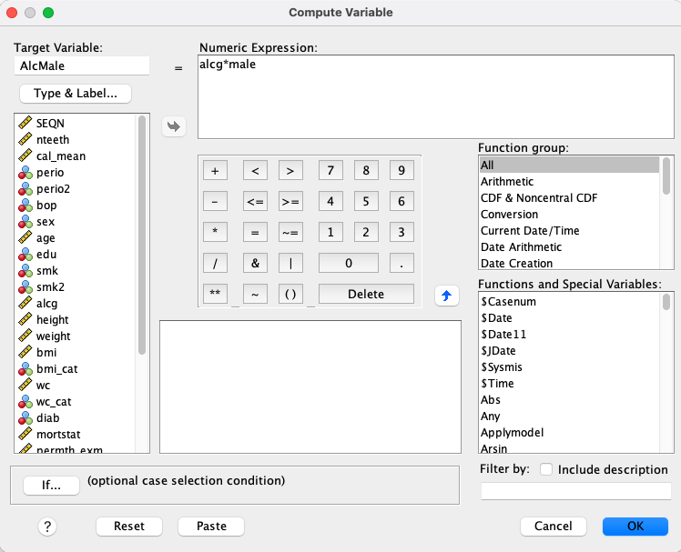
3. Fit multivariable model:
-
Analyze → Regression → Linear
-
Dependent Variable:
attachment loss. -
Independent Variables:
male,alcg,AlcMale.
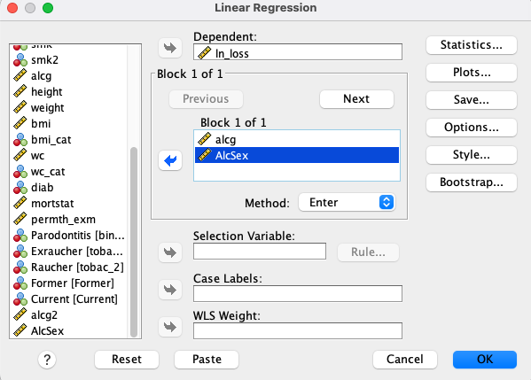
Equation: \(Y_i = \beta_0 + \beta_1 Male + \beta_2 alcg + \beta_3 alcg*Male + \epsilon_i\)
Exercise results
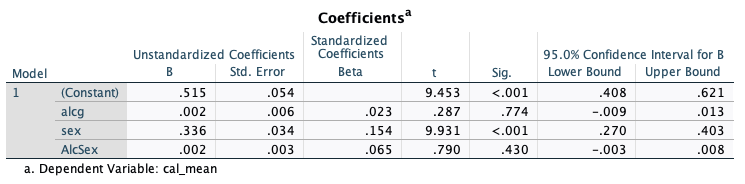
Interpretation:
Intercept: The expected attachment loss of an adult Female with 0g alcohol.
Male: Males have, on average, a 0.336 increase in attachment loss compared to females.
alcg: Each 1-unit increase in alcohol consumption is associated with a 0.004 increase in attachment loss.
AlcMale: Whether alcohol consumption has an impact on attachment loss depends on gender.
Additional interpretation
Consider:
- Equation: \(Y_i = \beta_0 + \beta_1 Male + \beta_2 alcg + \beta_3 alcg*Male\)
- the coding for
malevariable (0 = Female, 1 = Male), and - the continuous variable
alcg.
The CAL for a male that consumes 1g of alcohol is:
\(0.851 + 0.336 * 1 + 0.004 * 10 + 0.002 * 10 * 1 = 1.187\)
The CAL for a female that consumes 0g of alcohol is:
\(0.851 + 0.336 * 0 + 0.004 * 0 + 0.002 * 0 * 0 = 0.851\)